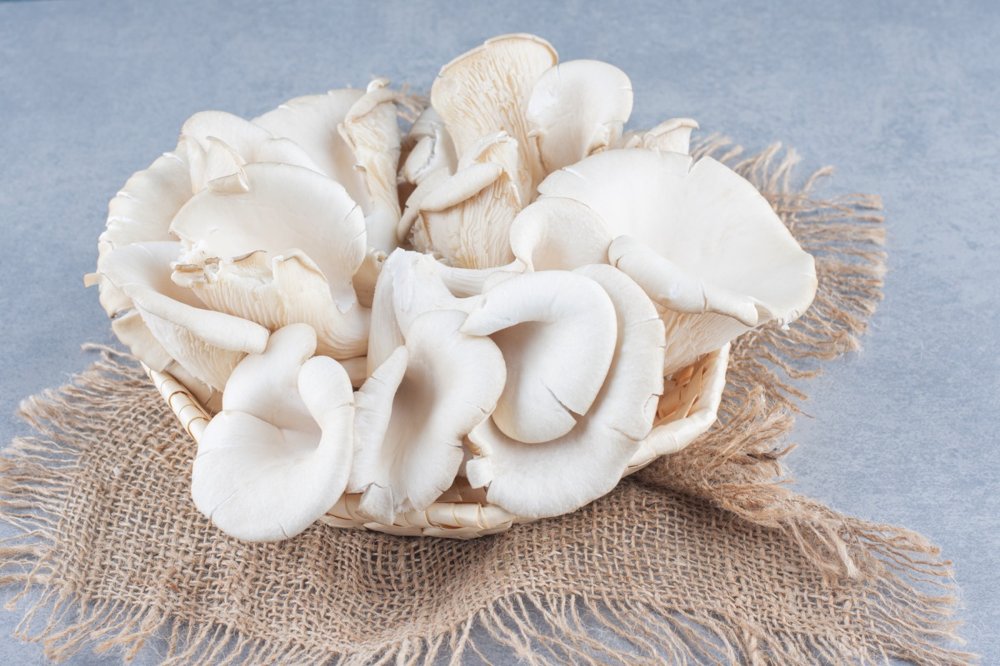

Good Mushroom

Pearl (P. ostreatus), pink (P. djamor), blue (P. ostreatus var. florida) and king oyster (P. eryngii). Fresh cold-chain for regional buyers, dried and powder for export.

Route-specific quality documentation and indicative timelines are confirmed at quote stage.
For a wholesale oyster mushroom enquiry, share the variety, fresh or dried form, quantity, delivery location and timing. For fresh material, handling and transport are reviewed with the destination; dried and powder requirements should include the intended use and any testing needs.
Pre-filled for Oyster Mushrooms.
Useful guidance for buyers and growers searching for oyster mushroom supply in India — varieties, fresh versus dried routes, quality checks and seller onboarding.
Oyster mushroom buying is highly use-case specific. Pearl oyster is the broadest commercial format for restaurants, retailers and dehydrated supply. Pink oyster is visually strong but route-sensitive. Blue oyster can work for fresh and dried supply depending on harvest quality. King oyster is denser and usually bought for premium foodservice. Good Mushroom separates variety, form and buyer route before quoting.
Fresh oyster mushrooms can move well when the buyer is close enough for cold-chain delivery and quick turnover. For distant B2B buyers, dried whole, sliced or powder formats are usually safer because shelf life, moisture and packaging can be controlled. This is why a farmer may receive different instructions depending on whether the open demand is from a nearby foodservice buyer or a dry ingredient buyer.
Common oyster mushroom channels include local vegetable distributors, restaurants, cloud kitchens, supermarkets, dried-food processors and B2B ingredient buyers. Good Mushroom is relevant when a grower can supply repeatable weekly volume and wants documented quality terms instead of only spot sales. We check location, harvest cycle, fresh shelf life, drying capability, current buyers and monthly capacity before onboarding.
For fresh oyster mushrooms, buyers care about harvest age, bruising, temperature control, packing size and delivery timing. For dried oyster mushrooms, buyers care about moisture, colour, aroma, foreign matter, microbiology and packaging. For powder, particle size and batch consistency matter more. Clear sorting by intended buyer prevents rejected shipments and mismatched pricing expectations.
Structured supply review with documented quality standards, batch checks and written commercial terms where buyer fit is confirmed.
Pre-filled for Oyster Mushrooms.
Quick answers. Full FAQ on the FAQ page covers everything not here.